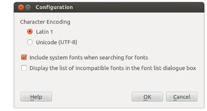

Character Encoding:
Selects whether the input file is to be interpreted as containing characters from either
the Latin 1 or
Unicode (UTF-8) character sets.
For most Western European languages this setting will have little effect and can be left
set to Latin 1 irrespective as to what format the input file was actually saved in.
The Latin 1 setting will also ensure that the "Euro" and "Pound Stirling" characters are generated
correctly, unless the text editor was specifically set to save files in UTF-8.
However, if the intention is to use international character sets such as
Hebrew, Cyrillic, etc. then it is necessary to select Unicode (UTF-8) and the input files
must also be saved in UTF-8 format.
Include system fonts when searching for fonts:
Searching the whole system for fonts can be a time consuming operation, so if only a few fonts are in regular use these should be copied to the local fonts folder within the AlbumEasy folder.
Display the list of incompatible fonts in the font list dialogue box: